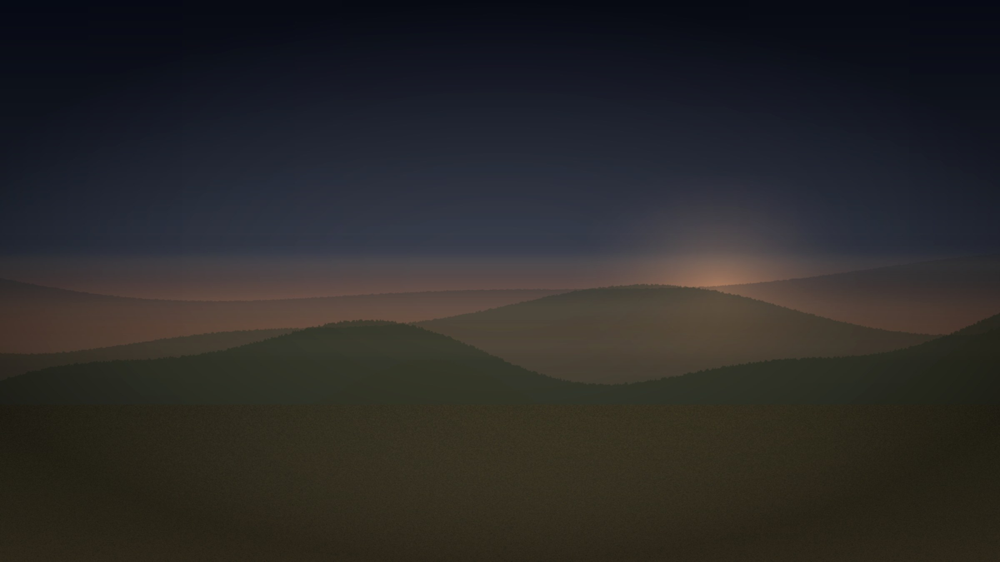

Market
Power-ready nodes are scarce
Scotland has surplus generation. The scarce resource is access at constrained grid nodes: capacity you can actually secure, on land that can take it.

Sylvyn
Powering Compute from the Ground Up
Scotland already generates more renewable electricity than it can use or move south. What is scarce is land of the right scale, in the right place, with a real path to power.
Renewable generation
38.5 TWh
Renewable electricity generated in Scotland in 2025. About 18.4 GW was online by mid-2026.
Scottish Government energy statistics · DESNZ regional capacity
20 GW
Minimum onshore wind capacity in Scotland by 2030.
Scottish Government Onshore Wind Policy Statement 2022
Market
Scotland has surplus generation. The scarce resource is access at constrained grid nodes: capacity you can actually secure, on land that can take it.
Moat
Land positions, a pathway to constrained capacity, and a delivery programme — nothing more on the public site.
Proof
One example: dual grid nodes with capacity already available, on land of the right scale, with a real path to power. We are building the same pattern at further sites.